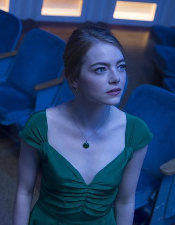

Mia Dolan

Mia Dolan is the co-main character of La La Land. At 28 years old, her dream is to
become a famous actress, and to achieve this goal, she is constantly attending
auditions, desperate to get any role she can to achieve her goal. She works at a
coffee shop until she eventually gets a role.
In the film, Mia wrote a one-woman play named So Long Boulder City.
She dates Greg at the beginning of the movie until she breaks up with him to
date Sebastian Wilder, an aspiring jazz music player who helps her achieve her
acting dream. Eventually, she marries a man whose name is David.
Sebastian Wilder
Sebastian "Seb" Wilder is the other main character of La La Land. In his 30s, his dream is to
open a popular jazz club/cafe. He also struggles in his career as a jazz pianist while
wanting to spread the joy and knowledge of jazz, to let it gain more popularity.
In the film, Seb was part of the band The Messengers, yet he only did it for a stable income.